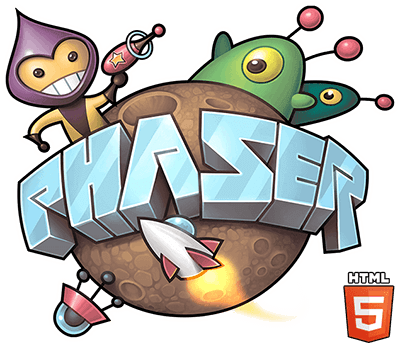
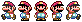
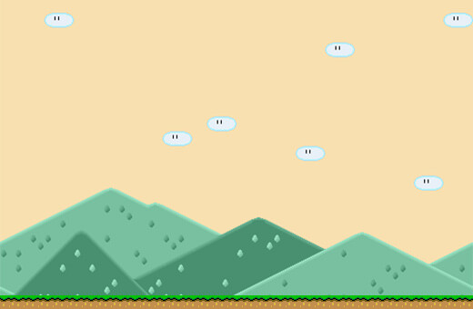
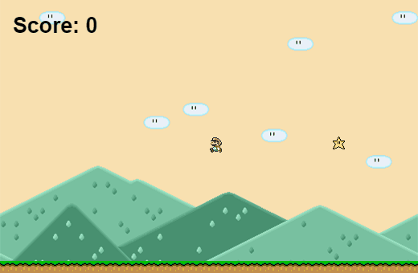
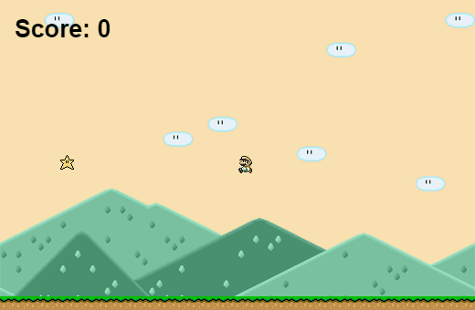

var game = new Phaser.Game(520, 340, Phaser.AUTO, 'my-game', { preload: preload, create: create, update: update });
function preload() {
}
function create() {
}
function update() {
} 
function preload() {
game.load.image('bg', 'assets/bg.png');
game.load.image('ground', 'assets/ground.png');
game.load.image('star', 'assets/star.png');
game.load.spritesheet('mario', 'assets/mario.png', 16, 20);
}
function create() {
game.add.sprite(0, 0, 'star');
}function create() {
game.physics.startSystem(Phaser.Physics.ARCADE);
game.add.sprite(0, 0, 'bg');
platforms = game.add.group();
platforms.enableBody = true;
for (i = 0; i < game.width/16; i++) {
var ground = platforms.create(i*16, game.world.height-15, 'ground');
ground.body.immovable = true;
}
}
function create() {
player = game.add.sprite(game.world.width/2, game.world.height/2, 'mario');
game.physics.arcade.enable(player);
player.body.gravity.y = 300;
player.body.collideWorldBounds = true;
player.animations.add('left', [0, 1], 10, true);
player.animations.add('right', [3,4], 10, true);
stars = game.add.group();
stars.enableBody = true;
var rand = Math.floor(Math.random() * (game.width-30));
var star = stars.create(rand, game.height/2, 'star');
star.body.gravity.y = 300;
star.body.bounce.y = 0.5;
scoreText = game.add.text(16, 16, 'Score: '+score, { fontSize: '32px', fill: '#000' });
}
Well, there is something wrong...
function update() {
game.physics.arcade.collide(player, platforms);
game.physics.arcade.collide(stars, platforms);
}
//create()
player.animations.add('left', [0, 1], 10, true);
player.animations.add('right', [3,4], 10, true);
[...]
cursors = game.input.keyboard.createCursorKeys();
//update()
player.body.velocity.x = 0;
if (cursors.left.isDown) {
player.body.velocity.x = -150;
player.animations.play('left');
}else if (cursors.right.isDown) {
player.body.velocity.x = 150;
player.animations.play('right');
}else {
player.animations.stop();
player.frame = 2;
}
if (cursors.up.isDown && player.body.touching.down) {
player.body.velocity.y = -150;
}//create()
game.physics.arcade.overlap(player, stars, collectStar, null, this);
//outside of create()
function collectStar (player, star) {
star.kill();
score += 10;
scoreText.text = 'Score: ' + score;
createStar();
}Use WAD to move.